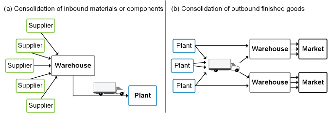
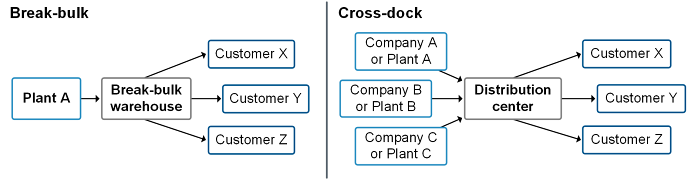
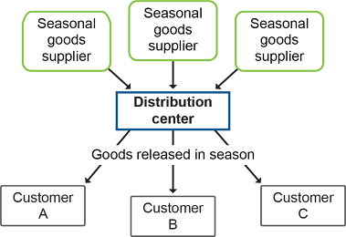
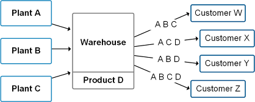
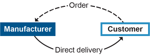
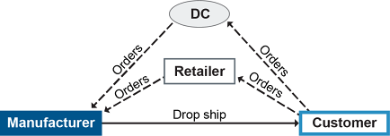
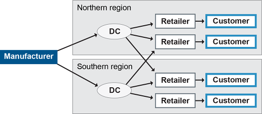
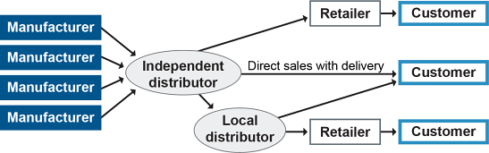
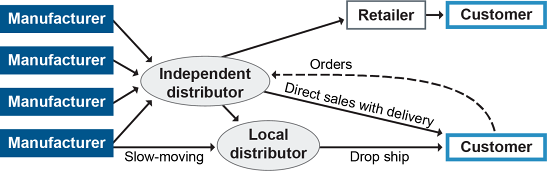
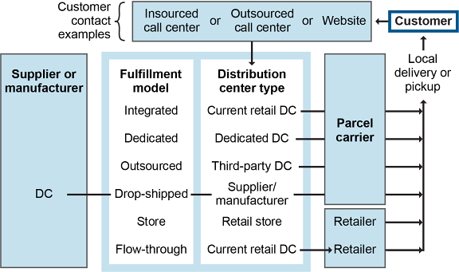

Distribution services include warehouse activities such as picking and value-added services such as consolidation. Delivery patterns are the methods that customers choose to acquire products, and this could include things like drop shipping or use of distributors and retailers.
Warehouse Activities
The following activities may take place in a warehouse. (Some of these may be considered value-added, such as if they have been streamlined, but inspection during receiving is an example of something not considered value-added.)
encompassing the physical receipt of material, the inspection of the shipment for conformance with the purchase order (quantity and damage), the identification and delivery to the destination, and the preparation of receiving reports.
Prepackaging refers to the situation in which products are received in bulk from a supplier and subsequently packaged in smaller quantities or combined with other products to form kits or assortments.
removing the material from the dock (or other location of receipt), transporting the material to a storage area, placing that material in a staging area and then moving it to a specific location, and recording the movement and identification of the location where the material has been placed.
Storing refers to putting items under warehouse control (in a storage point upstream of a workstation).
selecting or picking the required quantity of specific products for movement to a packaging area (usually in response to one or more shipping orders) and documenting that the material was moved from one location to shipping.
the function that performs tasks for the outgoing shipment of parts, components, and products. It includes packaging, marking, weighing, and loading for shipment.
Packaging and packing and marking are related to this definition.
Packaging is
materials surrounding an item to protect it from damage during transportation. The type of packaging influences the danger of such damage.
Packing and marking includes all
the activities of packing for safe shipping and unitizing one or more items of an order, placing them into an appropriate container, and marking and labeling the container with the customer shipping destination data as well as other information that may be required.
Warehouse Functions and Value-Added Services
Warehouses today offer economic and service benefits that go well beyond simple housing of raw materials, parts, or finished goods. On the economic side, warehouse operations can reduce the overall cost of logistics by their efficiency and effectiveness in receiving goods and packaging or arranging them for reshipping. At the same time, warehouse operations may improve customer service by cutting lead times, packaging goods for easy handling and identification, and arranging shipments to fit the recipient’s unique requirements. Warehouses are places of constant activity as workers and machines unload, store, retrieve, repack, arrange, and reload inventory that they may also assemble-to-order.
Functions that add supply chain economic or service value include
Consolidation of materials for shipping
Break-bulk and cross-dock facilities
Postponement
Stockpiling seasonal inventory
Spot-stocking advance shipments
Assortment (similar to spot-stocking)
Mixing (similar to break-bulk).
Consolidation
Consolidation occurs when a warehouse receives materials from more than one plant and combines them into outgoing containerload (CL) or truckload (TL) shipments (shipments that fill up the entire cargo bay) to a specific customer. It reduces logistics costs through economies of scale, because the consolidated shipments qualify for CL and TL discounts. It also reduces congestion at the customer’s dock. However, the warehouse may have to add sorting and perhaps assembly capability. There will be training and possibly hiring costs—plus costs for remodeling if more space is required.
Exhibit 5-11 provides a graphic view of consolidation as it functions for inbound shipments (a) and outbound traffic (b).
Exhibit 5-11: Consolidation

Break-Bulk and Cross-Dock Facilities
Operations at break-bulk and cross-dock facilities are similar except for the way orders come into the warehouse.
(1) Dividing truckloads, railcars, or containers of homogeneous items into smaller, more appropriate quantities for use. (2) A distribution center that specializes in break-bulk activities.
A break-bulk facility can build new truckloads of assortments of goods all destined for a given location.
the concept of packing products on the incoming shipments so they can be easily sorted at intermediate warehouses or for outgoing shipments based on final destination. The items are carried from the incoming vehicle docking point to the outgoing vehicle docking point without being stored in inventory at the warehouse. Cross-docking reduces inventory investment and storage space requirements.
An example of a break-bulk operation is food retailers. They receive full truckloads of combined customer orders from manufacturers. The break-bulk warehouse sorts or splits individual orders and ships them to the retail customers. Because the long distance transportation movement is a large shipment, transport costs are lower and there is less difficulty in tracking. For example, Walmart’s customers are its retail stores. If a supplier sends a bulk order of camping cots, the right number gets put in each truck bound for a different retail location as part of an assortment of goods for that store. That assortment may itself constitute a TL.
Break-bulk and cross-dock facilities provide the benefits of consolidated, full-trailer shipment into the facility, out of the facility, or both. They also reduce handling costs because put-away and picking are avoided.
Exhibit 5-12 depicts break-bulk and cross-dock operations.
Exhibit 5-12: Break-Bulk and Cross-Dock Operations

Postponement
Goods enter a postponement center in component form for later final assembly. The goal is to enable both production efficiency and responsiveness. (Typically these are tradeoffs.) Final configuration of the finished product is postponed until an order arrives, allowing parts to be assembled to fit the specific order. For example, since Europe uses four different plugs for electricity, generic printers arrive at a European distribution center and, once orders are received, workers add the correct cable along with written materials and labels in the correct language.
Components can generally be stored more efficiently than finished products. Also, forecasting is easier for the family of products that can be assembled from the parts than it would be for the separate end products. If the warehouse contained finished products, it would require safety stock for each item. There will, however, be costs for training or hiring staff with final production skills. Processing at the warehouse may be more expensive than finishing the product at the plant would have been.
Anticipation (Stockpiling Inventories)
Anticipation inventory, such as seasonal clothing, lawn furniture, or agricultural products, is stored at the warehouse in anticipation of future demand, as shown in Exhibit 5-13.
Exhibit 5-13: Anticipation Inventories

Stockpiling enables more efficient use of production capacity by reducing the need to increase capacity for the seasonal demand. In the case of agricultural products, it’s the “production” that is seasonal rather than the demand. So the product is stored in larger amounts as it becomes available and then distributed as demand comes in. A disadvantage of stockpiling is that more warehouse capacity is required than would be necessary for a Just-in-Time delivery system.
Spot-Stocking
Spot-stocking is focused on strategic markets. It is allocating inventory in advance of heavy demand in strategic markets rather than the inventory being stocked year-round or shipped as it’s being produced.
Advance shipments from a plant are sent to key markets to be sure they are close to customers in season. Agricultural products are spot-stocked during the harvest season to put them close to key markets and then are warehoused centrally for the rest of the year.
Customers and producers benefit from spot-stocking of items in key markets to minimize the chance of a shortage during peak demand.
Assortment Warehousing
Assortment warehousing is a technique that stores the goods close to the customer to ensure short customer lead times.
Assortment benefits the customer by reducing the number of suppliers it has to deal with to acquire the assorted goods. It also reduces transport costs by allowing larger shipment quantities.
Mixing
Mixing resembles break-bulk but involves shipments from more than one manufacturer. In a typical mixing setup, the warehouse receives full-vehicle shipments of different products from manufacturers in diverse locations, with each shipment receiving the full-load discount. (A full-load discount is a quantity rate discount offered for a CL or TL, e.g., usually set at 10,000 pounds (4,536 kilograms) for a truckload. A full load may occur when the cubic volume is full or when the weight limit is reached, whichever comes first.)
At the warehouse, shipments are broken down and assembled into the product mix desired by each customer or market. A particular outgoing shipment may contain goods that just arrived (as in break-bulk or cross-dock facilities), or it may combine the current shipment with products from storage.
Mixing avoids multiple smaller shipments from each manufacturer along with the required separate handling, storage, and display. It also makes more efficient use of storage space in the warehouse. Exhibit 5-14 illustrates the process of mixing shipments.
Exhibit 5-14: Mixing

Delivery Patterns and Fulfillment Channels
Delivery patterns, also called shipping patterns, refer to trends in how customers are buying goods and getting them to their place of business or home. Organizations can leverage some general order fulfillment channels described here. Note that the direct-to-consumer model has radically shifted delivery patterns for many organizations and logistics specialists.
The type of distribution network a supply chain adopts will have a huge impact on facility numbers and location decisions. Distribution channel strategy is determined during strategy formation; however, some tactical selections can be determined during network design.
There are several types of fulfillment channels, each having different levels of service outputs (break-bulking, spatial convenience, waiting and delivery time, variety and assortment) and channel design intensity (i.e., the complexity of the network and number of options or locations for customers).
Manufacturer storage with direct delivery.Exhibit 5-15 shows the type of network in which the manufacturer uses direct delivery. The manufacturer takes a customer order through any number of sales channels (direct, catalog, website, etc.) and directly ships the goods to the customer, with no intermediaries other than perhaps a carrier (unless the manufacturer owns a fleet).
Exhibit 5-15: Manufacturer Storage with Direct Delivery

This model is common in business-to-business (B2B) settings but can also be used for business-to consumer (B2C) sales. An example of its appropriate use in the B2B setting is for perishable goods that need to be on retail shelves as quickly as possible to maximize their useful lives. This could also be a supplier that produces large lot-size quantities. The primary benefit to the manufacturer is a direct relationship with its customers so it can directly interact with and market to them in the future. For B2C, it is used primarily for low variety, make-to-order goods that the customer is willing to wait for, since lead times can be long. Since there is only one echelon, the manufacturer has complete control over inventory and has low carrying costs. Shipments are typically in truckload (TL) or containerload (CL), but logistics costs can be high and intermediaries may be needed to reduce these costs.
Manufacturer storage with drop ship.Exhibit 5-16 shows the drop ship model, in which a distributor or retailer (or direct sales or online merchant) takes orders from customers and the customers receive the goods directly from the manufacturer. The distributor or retailer may have a floor model but no inventory. This model would probably use transload and cross-dock facilities. It would be best for high-value, sporadic demand items; these might be bulky items like refrigerators or be make-to-order, customized, or postponed items that can be finished when the order arrives (such applications may need manufacturer storage for components, postponed items, or for finished item staging such as to assemble enough items for a shipment). Shipments may be in small lots, and thus transportation costs can be higher and lead times longer, but the manufacturer can control delivery service reliability.
Exhibit 5-16: Manufacturer Storage with Drop Ship

In this model, the manufacturer doesn’t have direct contact with the customer, so customer knowledge is less than with the prior model. At the same time, the manufacturer does not need to maintain a sales force or other functions like credit approval.
Manufacturer to distribution center to retailer.Exhibit 5-17 shows the traditional supply chain, a manufacturer working with regional distributors. The distributors supply retail locations (in which customers buy goods) and handle the local delivery portion with their own vehicles. There can be one or more distribution centers (DCs) in this model, and a wholesaler echelon could also be added. The multiple echelons all need inventory, so this model is inventory-intensive. It is best for mass-produced, inexpensive goods with high competition. It produces strong product availability and high levels of customer service.
Exhibit 5-17: Manufacturer to Distribution Center to Retailer

The channel intermediaries and retailers are generally independent, but some DCs could be owned if this can be done for less than 3PLs can do it after all facility and inventory carrying costs are accounted for. Distributors provide break-bulk activities and minimize inventory by using fewer, more centralized warehouses. The retailers take over all customer-facing functions and their associated costs. The organization may need to negotiate for preferred shelf space and may not have much control over promotions or access to customer information without forging information-sharing partnerships.
Independent distributor with omni-channel network.Exhibit 5-18 shows a network where an independent distributor is the channel master, buying goods from multiple manufacturers (or other distributors) in bulk and aggregating them for a one-stop shop for retailers, local distributors, wholesalers, or direct customers. Having an omni-channel network means that the independent distributor maintains multiple customer contact methods, such as a sales force, a call center, a website/app (both mobile- and computer-accessible), and a series of wholesale and/or retail locations. Regardless of the method of customer contact, the customer experience should be seamless and consistent. Manufacturers join these independent distributors to gain another sales channel and access to a larger market. Retailers and distributors can often buy assortments in TL or CL shipments, and they gain economies of scale in pricing so they can sell at a competitive price for a profit.
Exhibit 5-18: Independent Distributor with Omni-Channel Network

The distributor needs to develop these local distributor and retail partnerships carefully to ensure that they build and maintain a large enough customer base. This will be accomplished, in part, by holding high inventory levels of fast-moving items. These organizations might negotiate exclusive contracts for markets, but competitors might do the same, and therefore they may not have full market access.
These distributors need a thorough and efficient transportation network of owned or contracted carriers to provide high customer service while controlling relatively high transportation costs. They can provide value-added services like aggregate inventory storage and bulk shipping of assortments. If they want customer information or information on promotions, they will need to form information-sharing partnerships.
They will also have a large number of suppliers they need to coordinate and partner with, when possible, to control prices, lead times, quality, and availability. They might even negotiate cost-sharing contracts.
Independent aggregator with e-business network. The model shown in Exhibit 5-19 is very similar to the previous model, but it depends more heavily on direct marketing to individuals through its own heavily branded website, which may sell all manner of goods. Alibaba and Amazon are examples. Direct shipment of goods to customers through parcel services is very common, but these organizations may also own a fleet or sell or ship through local distributors (which they may own). They move slow-moving goods directly from manufacturers through local distributors rather than carry this inventory themselves.
Exhibit 5-19: Independent Aggregator with e-Business Network

Other independent distributors will sell specialty goods to B2B or B2C niche markets using web sales. The independent distributor gains direct access to customers and can manage this customer information and customize the customer’s web interactions. They often use loyalty programs that offer free shipping for an annual membership fee. To keep this customer loyalty, they need very high levels of customer service.
The exhibit also shows that some independent distributors in this model still sell goods to local distributors, retailers, or even to other e-businesses. This allows the organization to offer omni-channel fulfillment such as buy online/pick up in store. (Usually the retailer would also be the distributor in this case.) The 2020 pandemic vastly increased the number of retailers who adopted some form of this model, selling both online and in retail stores.
Each type of channel, by virtue of how it’s structured, will perform at different levels on the key dimensions that impact customers’ satisfaction levels, including customer service level, product assortment, product availability, delivery time, channel complexity, inventory cost, transportation costs, and channel facilities. There are always tradeoffs to be made between channel types and the exact service attributes that make customers happy. The ability of customers to track and trace on their own is a clear example of an order qualifier these days. The convenience and variety of the direct-to-consumer model has seen a trend of delivery patterns shifting in this direction, so this model and its implications for logistics are discussed next.
Direct-to-Consumer Model
Exhibit 5-20 summarizes some of the order fulfillment channels that relate to the direct-to-consumer model but also shows some other permutations, because a variety of tactics can be used to accomplish direct-to-consumer delivery patterns. Other order fulfillment channels can likewise be accomplished in more than one way.
Exhibit 5-20: Direct-to-Consumer Permutations

As online shopping continues to make strong inroads into more and more areas that were traditionally retail purchases, organizations are facing strong changes in delivery patterns. In 2012, U.S. retail e-commerce sales were around 5 percent of total quarterly retail sales. This rate steadily increased each year, to about 10 percent by the beginning of 2020, but then spiked during the pandemic to almost 15 percent. As of the first quarter of 2021, the rate had fallen to 13.6 percent, according to the Census Bureau of the U.S. Department of Commerce. This represents almost $200 billion of commerce for that quarter.
The retail delivery pattern involves shipments of goods or components from multiple suppliers, consolidation at distribution centers, and shipment from there to retailers. This pattern emphasizes multimodal transportation for efficiency and economies of scale. The direct-to-consumer delivery pattern, on the other hand, involves the same first steps of getting goods and consolidating them at distribution centers, but from there it becomes a series of small package deliveries directly to consumers. In some cases, the direct-to-consumer delivery pattern involves forwarding individual packages directly from suppliers to customers with no intermediaries.
Even the direct-to-consumer delivery pattern has been shifting. While there has been a movement toward next-day delivery, for consumers who are working during the day, this has resulted in packages left outside doors or missed deliveries. One innovative solution developed by Wehkamp, a large Dutch mail-order company, was to ask “When do you want your delivery?” to help make deliveries when customers are actually home. They even developed same-day delivery, in part by reducing their time from customer order to ready to ship to 30 minutes. Other European services have started making deliveries to small village grocery stores or gas stations for customer pickup.
The magnitude of the shift in delivery patterns from large shipments to retailers to individual shipments to consumers is immense for the logistics industry. Third-party logistics providers who specialize in truckload and less-than-truckload (LTL) delivery networks are under pressure from the reduction in demand for their services. Mergers and acquisitions are occurring among traditional 3PLs as they seek to scale upward to be large enough to start offering services other than just TL and LTL. If this trend continues, there will be far fewer logistics providers in the market, and those that survive will need to be able to provide their traditional functions plus functions that are currently provided by the likes of UPS, FedEx, and USPS. For example, according to a Bloomberg article by Black and Day, to improve the reliability of their same-day and two-day deliveries, Amazon has been investing in a private fleet of airplanes, and in 2019 it abandoned its contract with FedEx for air cargo. Per an article by Katie Canales, Amazon was also working to double the size of its private delivery fleet in 2021 by providing business start-up assistance to small trucking companies in exchange for exclusively working with Amazon. Part of its strategy to achieve same-day delivery is to open distribution centers in these urban areas rather than locating them in the countryside, as is the case with many retailers, including Walmart.
Click card to flip · Use arrows or shuffle to practise